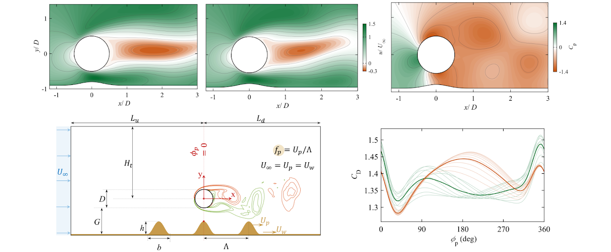
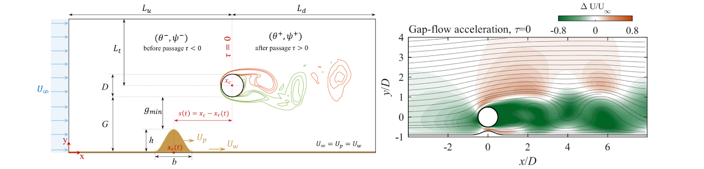
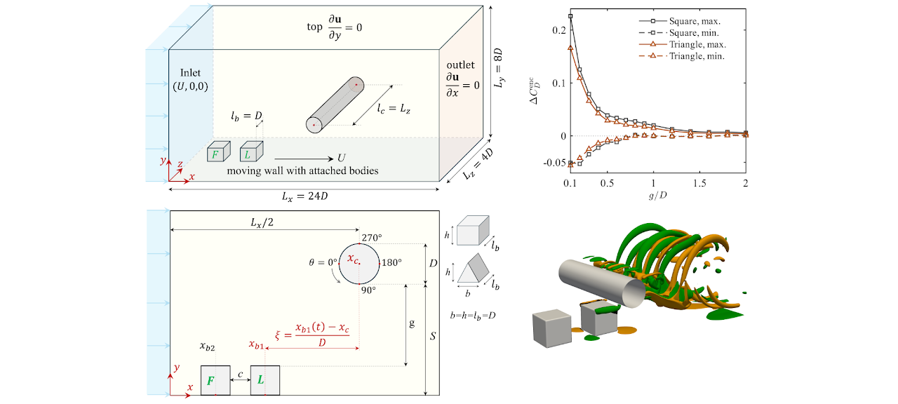
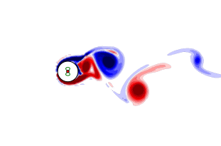
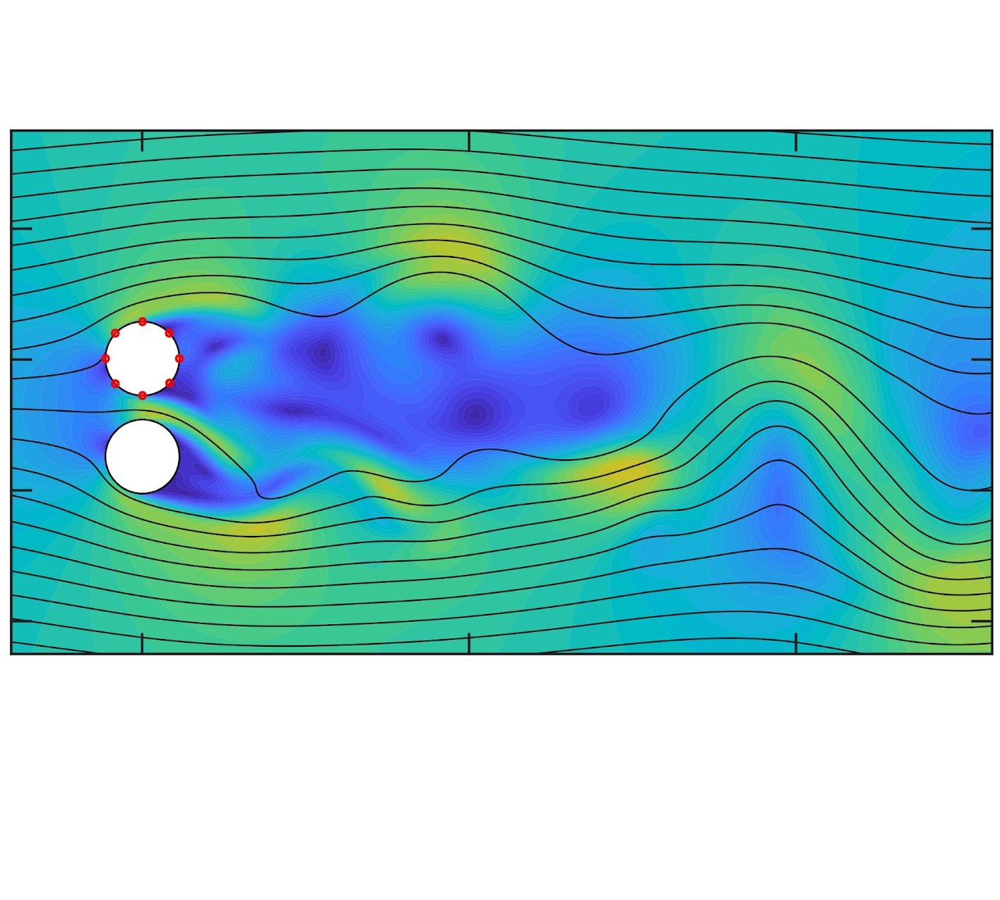

Research
My research focuses on wake dynamics and fluid–structure interaction: how moving bodies and nearby boundaries change a flow, how those changes load a structure, and what pressure measurements can reveal about the surrounding environment.
Wake dynamics & hydrodynamic loading
I study how nearby moving bodies and boundaries disturb a cylinder wake and change its loading. Force histories, surface pressure, and synchronized flow fields connect the timing of a disturbance with the immediate load and the wake’s later response.
Current studies consider isolated and successive passages, recovery between encounters, and synchronization under periodic ridge passage. A central question is whether the wake state at arrival improves predictions of the next loading event. Another is whether a synchronized wake also produces smaller force fluctuations.
Periodic ridge passages Under submission
Synchronization and force fluctuations
Two-dimensional simulations at Re = 100 examine a cylinder near periodically spaced ridges on a moving wall. The study distinguishes a wake that follows ridge passage from one with reduced loading: synchronization can accompany either smaller or larger lift fluctuations.
Manuscript & abstract →
Phase and recovery Under review
When the next disturbance arrives
A passing ridge changes both the cylinder load and the timing of later vortex shedding. At Re = 100, I examine how arrival phase and recovery from an earlier disturbance affect the response to a following ridge, and when recovery information improves a phase-only prediction.
Manuscript & abstract →
Successive body passages Under review
Geometry, clearance, and wake state
Three-dimensional simulations at Re = 400 examine square and triangular bodies passing beneath a cylinder. I compare isolated and successive encounters to separate the effects of clearance, body shape, and the incoming wake state on the immediate and delayed loading.
Manuscript & abstract →
These studies use controlled cylinder–wall configurations. The two-dimensional ridge studies and three-dimensional body-passage simulations address different Reynolds numbers and geometries.
Vortex-Induced Vibrations
Vortex-induced vibration couples unsteady vortex shedding with structural motion. I study both prescribed-motion cylinder wakes and the in-line and cross-flow response of flexible cylinders, with an interest in how motion and actuation affect the coupled flow–structure response.
This work includes numerical comparisons of two- and three-dimensional wakes and a published study of piezoelectric modulation of flexible-cylinder vibration. Understanding these interactions can inform vibration-control strategies for slender marine structures.
Research question: How do imposed motion and actuation change the vibration response and the surrounding wake?
Oscillating-cylinder wake Hide animationShow animation

Pressure-based flow sensing
Surface pressure provides a way to infer nearby geometry from measurements on a structure itself. In a published study, I used three-dimensional simulations at Re = 200 to identify the gap between two stationary, equal-diameter cylinders. Pressure features were used to train inverse models, with Gaussian process regression giving the strongest performance in this benchmark.
The study also examined a sparse four-sensor layout and sensitivity to added noise. Performance was stronger for interpolation and unseen interior gap intervals than for extrapolation near the limits of the sampled range. Extending this approach to moving objects and more general geometries requires further validation.
Research question: How much information about a nearby body can be recovered from a small set of surface-pressure measurements?

Methods & tools
Flow and structural response
Computational fluid dynamics and experiments to study wake evolution, hydrodynamic forces, and vibration.
Signals and inverse models
Pressure and force analysis, phase-based comparisons, and data-driven models that connect measured signals to flow conditions.
Scientific computing
Python, MATLAB, and Julia for simulation, data analysis, and model development.